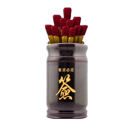

Draw a virtual fortune stick from the sacred jar and receive divine guidance. This ancient Chinese temple tradition offers personalized readings for career, love, health and wealth.

The Guanyin Oracle — known in Cantonese as Kau Chim and in Mandarin as 观音灵签 — is one of the oldest surviving forms of Chinese fortune telling. For more than a thousand years, worshippers have shaken a bamboo cylinder of 100 numbered sticks in front of the goddess Guanyin and interpreted whichever stick fell out first as divine guidance.
Oracle Day brings the full 100-sign canon online — free, in six languages (English, 中文, 日本語, 한국어, Español, Français), with interpretations for career, love, health and wealth.
Want a deeper walkthrough? Read the full beginner's guide →
Yes. Three free draws per day across all 100 signs in 6 languages. A detailed paid reading for career, love, health and wealth is an optional $1.99 upgrade per sign.
Kau Chim is not a prediction of specific future events. Each sign is a poetic mirror reflecting an aspect of your question you may not have considered. Its value comes from forcing you to pause, articulate the question clearly, and sit with an answer you might not have expected.
Traditionally, no — the first stick is the answer. Re-drawing is considered refusing the answer rather than re-asking the question. If you have a different question (topic or context), you may draw a new stick.
Each of the 100 sticks carries a classical Chinese poem that uses natural imagery (dragons, moons, forests) as metaphor. Bring your question to the poem — the image that resonates most is the oracle's answer for you.
观音灵签（粤语称 Kau Chim、普通话称 观音灵签）是中国 现存最古老的求签占卜方式之一。一千多年来，善信摇动装有 100 支编号签的签筒， 请出一支，以签诗的比喻启发对自身处境的思考。
有求必应签把完整的 100 支经典观音灵签搬到网上 —— 免费、6 语言 （中文、English、日本語、한국어、Español、Français），每签附带 事业、姻缘、健康、财运四个维度的详细解读。
想了解更多？ 阅读求签前的准备指南 →
免费。每天 3 次免费抽签覆盖全部 100 签、6 语言。付费项目仅有 每签 $1.99 的四维度详细解读，完全可选。
观音灵签并不是对未来具体事件的预言。每一支签是一面诗意的镜子， 映照出问题中你可能忽略的一面。它的价值在于：逼你停下来、把问题说清楚、 并坦然接受一个未必如你所愿的答案。
传统上不可以。第一支签就是答案，重抽更接近于拒绝答案、而不是重新提问。 若是换了完全不同的问题或情境，可以另行抽一支。
每支签都配一首古典汉诗，用龙、月、森林等自然意象作比喻。带着你当下的 问题去读，哪一句最让你心头一动，那就是签给你的答案。